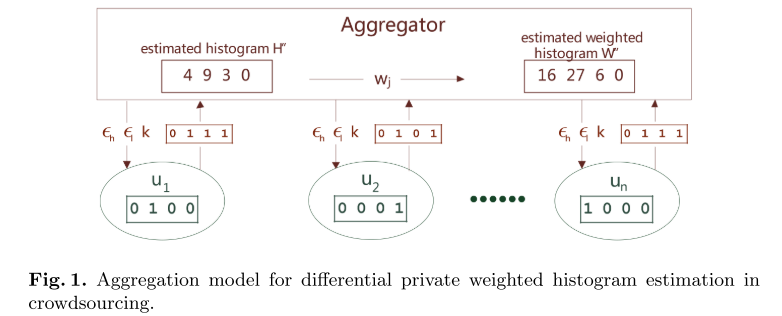
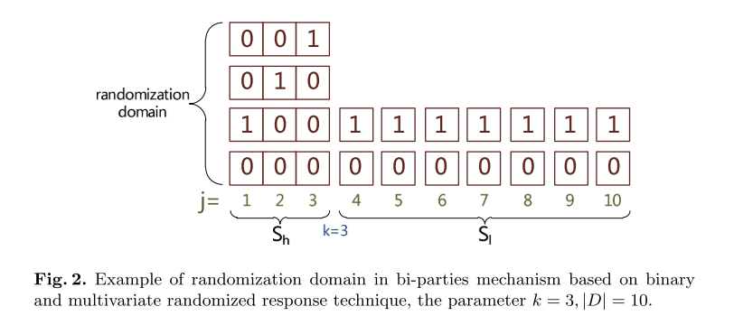
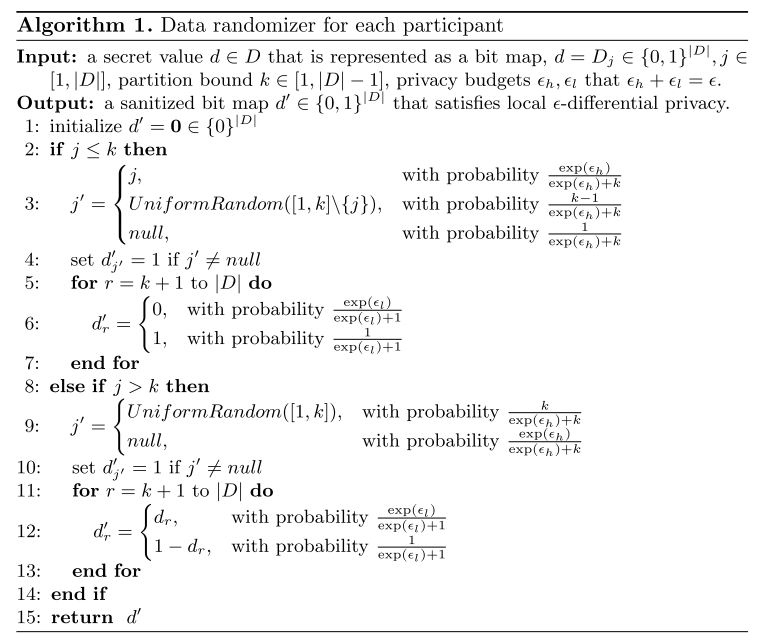
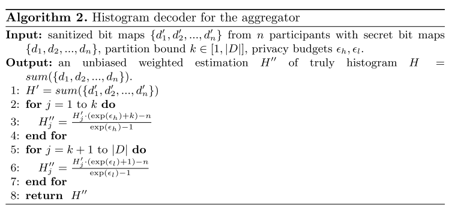
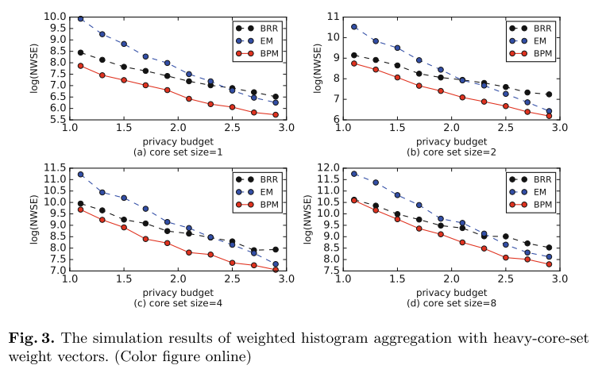
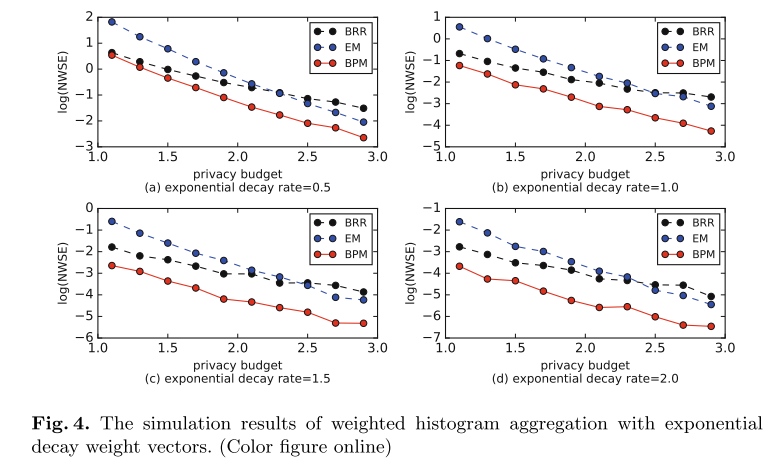

文章地址：https://link.springer.com/chapter/10.1007/978-3-319-42836-9_23
标题：Private weighted histogram aggregation in crowdsourcing
作者：Shaowei Wang, Liusheng Huang, Pengzhan Wang, Hou Deng, Hongli Xu, Wei Yang
发表会议：WASA 2016
Intruduction
对于很多众包任务来说,直方图估计是一项比较重要的任务。在传统的直方图估计中，每个桶（即每个类别）的权重是一样的。但是实际上，直方图的不同类别可能赋予不同的权重。可见，weighted aggregation在众包中也是一类很重要的任务。
与此同时，隐私问题也很重要，数据贡献者贡献的数据可能在一定程度上反映出用户的特性。比如当统计任务是统计用户年龄，性别，或者所在地点等的时候，用户的隐私问题显得尤其重要。我们当然是希望我们的机制是privacy-preserving的。
当前已经有很多方法去解决用户的隐私问题了，但是这些方法在遇到带权重的直方图估计时，效果不那么好。本文提出了一个bi-parties机制。简单来说，本文将权重分为两部分，然后再分配epsilon。总的来说，本文的贡献点如下：
- 提出了一个新的LDP机制叫做 bi-parties 机制，可以用于带权重的直方图估计。
- 我们给出了理论上的分析结果。
- 实验效果表明我们的方法可以有效减小实验误差。
Preliminaries
本章节讲了一些需要的背景知识
Local Differential Privacy
LDP的概念已经说过很多次了，总的来说，LDP是想要达到输入到输出上的概率不可区分性。即根据输出，无法判断输入是哪个。通常来说定义如下，对于可能的输入 $x,y$ 以及输出 $o$，如果机制 $M$ 满足：
那么我们就说机制 $M$ 满足 $\epsilon$-LDP。其中 $\epsilon$ 是 privacy budget。通常来说，我们常常用 Random Response 来实现LDP。
Weighted Histogram Aggregation Model

带权重的直方图估计，简单来说就是每个桶是有权重的。首先举个例子，如图1所示。我们假定有4个桶，其权重分别为 $[4,3,2,1]$，然后用户的数据经过LDP机制之后发送给 Aggregator，这个数据集成者收到数据之后对每个桶的数据求和，然后乘以权重，就得到了最终的结果。这个例子应该已经能很清楚的说明什么是带权重的直方图估计了。
那么带权重和不带权重有啥区别呢？为什么不能直接将不带权重的机制运用过来呢？可以这么理解，在不带权重的情况下，每个桶的统计误差都是一样的（本质是 $\epsilon$ 并未对桶特殊处理）。因此权重大的就会显得误差大。所以我们希望权重大的可以误差小一点，然后权重小的误差大一点也没关系。这就启发我们对不同权重的桶设定不同的 $\epsilon$ 了。
Mechanism
延续上一节的思想，这一章就告诉我们如何对不同的权重去设计机制。
Bi-parties Mechanism
这个 Bi-parties 机制实际上非常简单，就是将权重分为两部分，高权重部分用一个机制，低权重部分用另外一个机制。下图举个例子：

我们假设前三个桶是高权重部分，后面7个是低权重部分。那么我们现在就关心对高权重和低权重怎么去处理了。
先说高权重部分。这个实际上就是 k-RR了。只不过作者多考虑了一种都是 0 的情况，也就是算法里面的 $null$，个人觉得考虑这个完全没有必要。
然后剩下的就是低权重部分了，权重部分的处理相当简单，就是对每一位采用 Random Response。这两个一组合，就形成了作者所说的 Bi-parties 机制了。其算法如算法1所示。

当然，设计了编码机制之后，还需要一个对应的估计方法，因为这个 k-RR 和 Random Resposne 都是很传统的方法了，所以其估计也就很简单了。对直方图的估计如算法2所示。

Optimal Parameters Selection
我们前面说到，要将直方图分为两部分。那么该怎么分呢？也就是前面中的参数 $k$ 取多少合适呢？
作者这里以方差为指标，我们看一下方差怎么算：
根据这个方程我们发现，这个误差是依赖于真实结果 $H$ 的。实际中，作者说一般是有一个先验知识的，我们不妨假设这个 $H$ 是个均匀分布，那么上面的这个式子就变成了：
当然，我们不能直接给出 k 应该取多少。作者说，当给定 k 的时候，这个目标是凸的，所以我们可以遍历 $k \in\{1,2, \ldots,|D|\}$ 找到最优的解，所以复杂度是 $O(|D|)$ 的。
Theoretical Analysis
Error Bounds
根据上面的计算，作者首先给出了 WSE 的上界，即：
为什么上式成立呢。因为这个机制的误差肯定不会比传统的方法差，所以这个方法的误差肯定小于传统的方法。感觉有点牵强啊。
Computational Complexities
然后这里又分析了计算复杂度，总的来说算法1的复杂度是 $O(|D|)$ ，然后算法2的复杂度是 $O(n \cdot|D|+|D|)$。其中是 $n$ 用户的数量。因为还有一个求和的过程。
Experiments
接下来就到了实验部分了。作者尝试了$\epsilon \in [1, 3]$ ，然后设定了 $|D|=40$，并且假定有1000个用户。权重怎么办呢，作者采用了两个标准：heavy-core-set families 和 exponential decay families. 作者把自己的方法 bi-party mechanism (BPM) 和 binary randomized response (BRR) 以及 exponential mechanism (EM) 对比。然后误差采用了平均带权平方误差，就是$NWSE=WSE/n$。


图3和图4展示了两种权重下面不同方法的估计误差。可以看出来的是作者提出的这个BPM方法还是有着比较好的实验效果的。
Related Work
这部分介绍了一些有关的工作，就不说了吧。
Conclusion
总的来说，本文介绍了一种可以解决带权重的直方图估计的机制，同时分析了这个机制的误差，以及实验结果表明，所提出的机制有着比较好的实验效果。
本篇内容到这里就结束了，若想知道更多和信息安全有关的技术可在公众号留言。识别以下二维码可以成文本公众号的小粉丝，关注更多前沿技术。